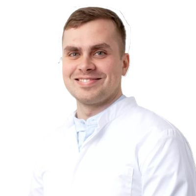
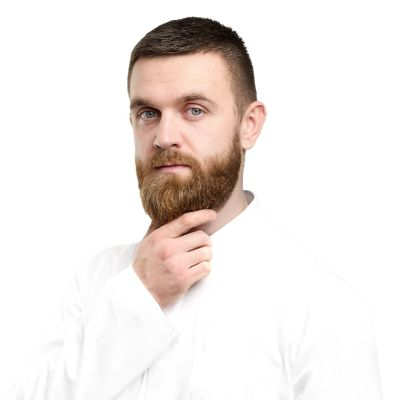

Власний оперблок · Дніпро
Загальний хірург і пластичний хірург — разом плануємо і проводимо операцію. Хірургічний результат і мінімальний рубець в одній клініці.
Операції та кейси
Кожен кейс — повна інформація: ситуація, метод, маршрут пацієнта, вартість та можливі супутні витрати.
Безпека та стандарти
Незалежно від того, яка операція і в якій клініці — ось критерії, які захищають пацієнта.
Орендована операційна — це ризик нестандартних умов. ОН Клінік має власний оперблок з постійним контролем стерильності та обладнання.
Ускладнення після операції потребують негайної допомоги. Наявність реанімаційної підтримки та стаціонару в тій самій будівлі — обов'язкова умова.
Сертифікована стерилізація інструментів, одноразові витратні матеріали, контроль мікробіологічної чистоти — для кожної операції.
Шимитило Олена Ігорівна — анестезіолог клініки. Кожна операція проводиться з постійним моніторингом стану пацієнта.
Рубець після операції — медичний факт. Участь пластичного хірурга в плануванні лінії розрізу мінімізує видимий косметичний дефект.
Вартість операції, аналізів і стаціонару фіксується на консультації. Без прихованих доплат під час лікування.
Хірурги
Загальний і пластичний хірург — планують кожну операцію разом. Хірургічний і естетичний результат в одному підході.

Хірург · Проктолог
Вузька практика — грижі, підшкірні новоутворення, пілонідальні кісти, гінекомастія. Фокусована спеціалізація дозволяє відпрацювати кожен тип операції до стабільного, передбачуваного результату. Пацієнти відзначають детальні пояснення і ненав'язливий підхід до вибору лікування.
Підхід: доказова медицина, сучасні протоколи малотравматичних операцій. Навчання: герніопластика з сітковими імплантами, мінімально інвазивні техніки. Інтернатура із загальної хірургії — 2020.
Профіль на onclinic.ua →
Пластичний хірург · Комбустіолог
Поєднує пластичну хірургію та комбустіологію — рідкісне поєднання, що дає глибоке розуміння рубцеутворення та відновлення тканин. Бере участь у плануванні лінії розрізу при загальнохірургічних операціях — щоб мінімізувати косметичний наслідок вже на етапі планування.
2022: спеціалізована підготовка в клініці Кузанова (Тбілісі) — один із провідних центрів пластичної хірургії. Навчання: пластика шкіри після опіків та травм, реконструкція складних ран, косметичний шов. Курси НМАПО ім. Шупика, Київ.
Профіль на onclinic.ua →Підбір хірурга
Ви побачите рекомендованого лікаря з поясненням і зможете обрати зручний час консультації.
Оберіть найближчий до вашої ситуації варіант
Це допоможе оцінити терміновість
Підберемо доступний час у розкладі хірурга
Рекомендація на основі вашого запиту
Найближчі вільні слоти — оберіть 1–3 зручних варіанти:
Часті питання
Відповіді на питання, з якими пацієнти зазвичай приходять на першу консультацію.
ОН Клінік Дніпро виконує хірургічні операції у власному оперблоці: видалення гриж (пупкова, пахова), ліпом та атером, пілонідальної кісти, корекцію гінекомастії та рубців. Клініка має власний стаціонар та реанімаційну підтримку.
Хірурги клініки: Портняга Євген Михайлович (хірург та проктолог, 7+ років практики, вузька спеціалізація на грижах і новоутвореннях, рейтинг 5/5) та Романчук Максим Ігорович (пластичний хірург та комбустіолог, 7+ років, навчання в клініці Кузанова Тбілісі, рейтинг 5/5).
Ціни на операції у Дніпрі: видалення ліпоми — від 10 000 грн, герніопластика (грижа) — від 17 000 грн, видалення гінекомастії — від 15 500 грн, пілонідальна кіста — від 28 000 грн, корекція рубців — від 11 000 грн. Передопераційне обстеження та палата — додатково від 5 000 грн.
Запис на консультацію: онлайн через форму на сайті або за телефоном координатора. Після заповнення форми координатор передзвонює протягом 30 хвилин у робочий час.
Залиште номер — координатор зателефонує і підбере зручний час.
Дані передаються координатору клініки. Разом з вашим запитом — відповіді з квізу (якщо заповнювали).